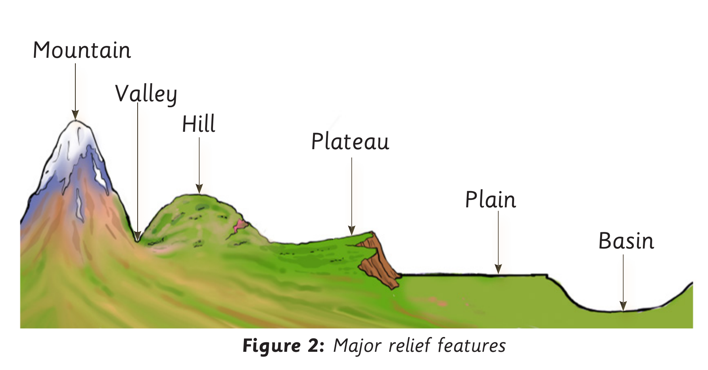

The relief of a place is determined by the presence of various land shapes in the place concerned. The shapes are known as relief features. Relief features vary in appearance in relation to their heights and shapes. In order to understand the differences in land shapes, we need to learn about the earth’s major relief features. Some of the major relief features are mountains, valleys, hills, plateaus, basins and plains. Figure 2 illustrates the major relief features.

Distribution and importance of the earth’s major relief features in Tanzania
Every land has a distinctive shape due to the presence of various earth’s relief features on it. For example, Tanzania’s relief is unique due to its distinctive appearance. The presence of mountains, valleys, plains, hills, basins and plateaus in Tanzania, is country’s pride. These relief features are found in various regions in the country.